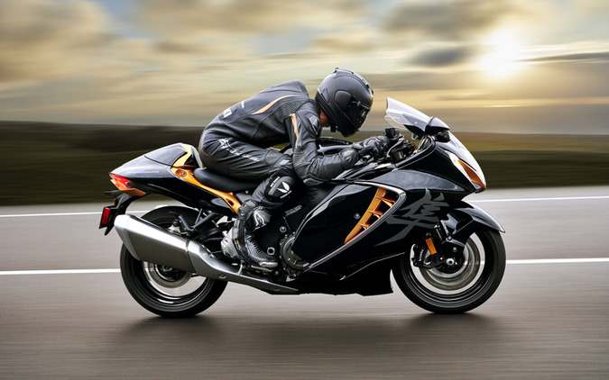
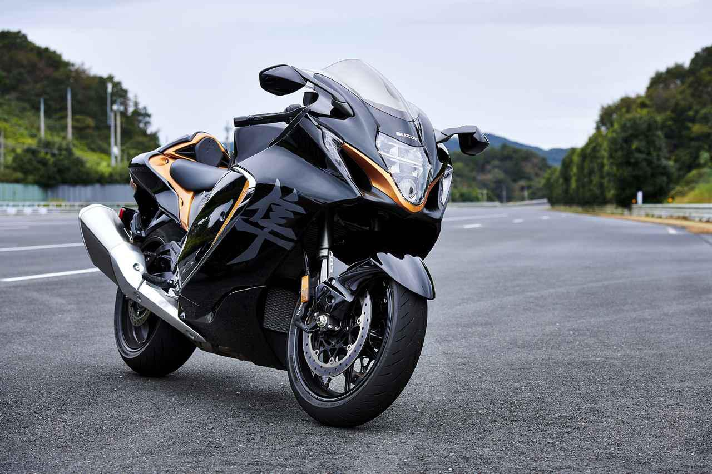

世界最速のバイク隼。 パワーモード（PW）は3段階。後輪のスリップを抑制するトラクションコントロール（TC）、 フロントタイヤのリフト（ウィリー状態）を抑えるアンチリフトコントロール（LF）、 エンジンブレーキの強さを調整できるエンジンブレーキコントロールを備え、それぞれに制御の介入度を調整することが可能です。 ちなみに高速道路で快適なクルーズコントロールが追加。シフトアップ&ダウンにクラッチ操作を必要としないクイックシフターも装備。 そして、普段はまず使うことがない（笑）ロケットスタート装置ローンチコントロールもあります。 ユニークなところではアクティブ スピードリミッターという『ユーザーが自分で速度リミッターを、 手元で簡単にかけられる』装置がつくようです。うっかり速度違反防止？ 地味に嬉しいかもしれません。

そして、大きな物議を醸しそうなのがエンジン最高出力です。 排気量は従来と同じく1340ccのまま。先代が197馬力だったのに対して、新型『隼』は190馬力となりました。 しかし、隼の最高速が名目上299km／hなのは、これまでと同じく変わっていないんです。 新型は0-100km加速の時間も0.2秒速くなっているし、0-200mのタイムも歴代最速です。 制動力に関しては、かなりこだわっている様子です。キャリパーは第二世代と同じくブレンボ製ですが、最新のものに換装されています。 ちなみにブレーキローターも従来のΦ310mmからΦ320mmに大径化。放熱性も高められているとのこと。